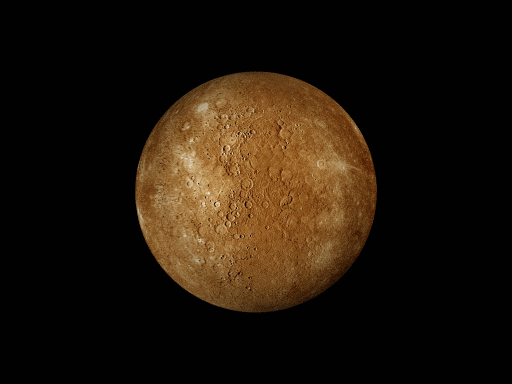
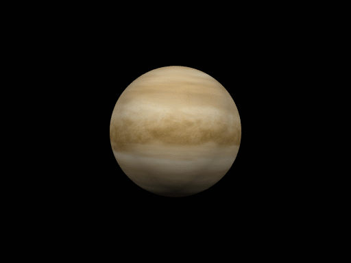
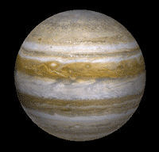
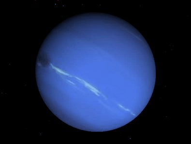

System
System
The Sun is the star at the center of the Solar System. The Sun's diameter is about 1.39 million kilometers (864,000 miles), or 109 times that of Earth. It is a nearly perfect ball of hot plasma. Every second, the Sun's core fuses about 600 million tons of hydrogen into helium, and in the process converts 4 million tons of matter into energy. The English word sun developed from Old English sunne. The Sun is a G-type main-sequence star that constitutes about 99.86% of the mass of the Solar System. The Sun is composed primarily of the chemical elements hydrogen and helium.
Four terrestrial planets
Mercury is the smallest planet in the Solar System and the closest to the Sun.Its orbit around the Sun takes 87.97 Earth days, the shortest of all the Sun's planets.(Click here)
Venus is the second planet from the Sun.The third smallest planet in the Solar System.Venus is a terrestrial planet and is sometimes called Earth's "sister planet" because of their similar size, mass, proximity to the Sun, and bulk composition. It is radically different from Earth in other respects.(Click here)
Earth is the third planet from the Sun.Earth formed over 4.5 billion years ago. During the first billion years of Earth's history(Click here)
Mars is the fourth planet from the Sun and the second-smallest planet in the Solar System. Mars can be viewed from Earth with the naked eye, as can its reddish coloring.(Click here)
Mars can be viewed from Earth with the naked eye, as can its reddish coloring.(Click here)
Two gas giants
Jupiter is the fifth planet from the Sun and the largest in the Solar System.Jupiter is surrounded by a faint planetary ring system and a powerful magnetosphere.(Click here)
Saturn is the sixth planet from the Sun and the second-largest in the Solar System, after Jupiter. The planet's most notable feature is its prominent ring system, which is composed mainly of ice particles, with a smaller amount of rocky debris and dust.(Click here)
The planet's most notable feature is its prominent ring system, which is composed mainly of ice particles, with a smaller amount of rocky debris and dust.(Click here)
Two ice giants
Uranus is the seventh planet from the Sun. Like the other giant planets, Uranus has a ring system, a magnetosphere, and numerous moons.(Click here)
Like the other giant planets, Uranus has a ring system, a magnetosphere, and numerous moons.(Click here)
Neptune is the eighth planet from the Sun and the farthest known solar planet.Neptune is not visible to the unaided eye and is the only planet in the Solar System found by mathematical prediction rather than by empirical observation(Click here)
Drawf planet
Pluto is a dwarf planet in the Kuiper belt. It was the first object discovered in the Kuiper belt and remains the largest known body in that area. After Pluto was discovered in 1930, it was declared the ninth planet from the Sun.(Click here)
It was the first object discovered in the Kuiper belt and remains the largest known body in that area. After Pluto was discovered in 1930, it was declared the ninth planet from the Sun.(Click here)